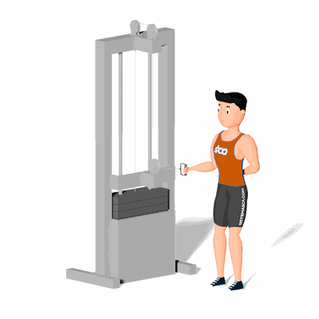

Manguito Rotador no Cross Over Interno

Esse exercício trabalha os músculos da região do ombro, mais especificamente o conjunto Manguito Rotador formado por quatro músculos: supra-espinhoso, infra-espinhoso, redondo menor e subescapular. Tem como maior benefício a prevenção de lesões na região e fortalecimento das articulações do ombro.
Ficha Técnica
Tipo: Musculação
Grupo Muscular: Ombro
Aparelho: Nenhum
Músculos: Nenhum
Como realizar
- Posicione de lado ao aparelho Cross Over;
- Roldana no mesmo nível dos cotovelos;
- Um dos braços à frente, segure a alça do aparelho mantendo o cotovelo flexionado e o antebraço em paralelo ao solo;
- Com o tronco fixo, realize a rotação do ombro para dentro, levando a sua mão para próximo do corpo;
- Retorne à posição inicial de forma controlada e repita os movimentos, conforme o número de repetições orientado pelo professor.
 RC STORE
RC STORE